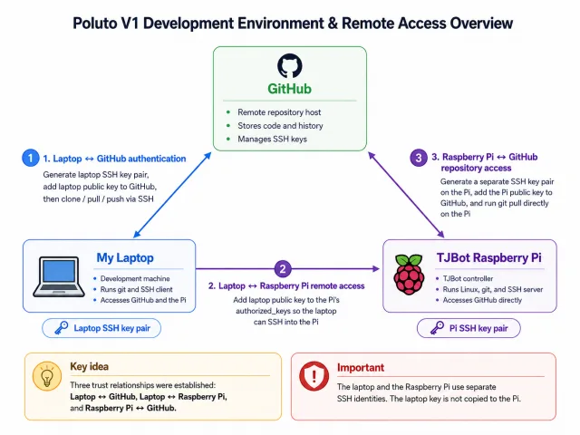

Notes / Lab Archive
Project logs, study notes, and some random thoughts.
Working on
1 project · 1 note
Getting lost in
Ready for future notes
Processing
1 note · Updated Aug 26, 2026
New notes, some changes, and other recent activity.

Projects / Poluto V1
Thoughts